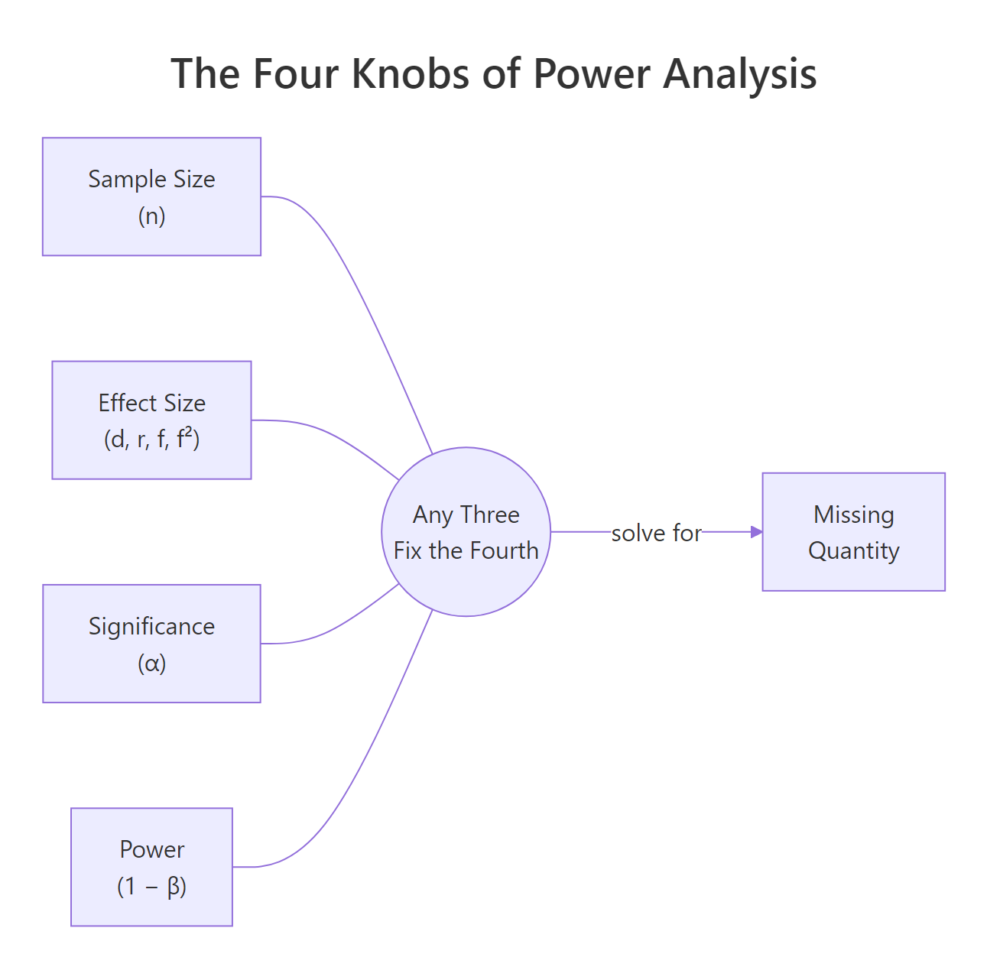
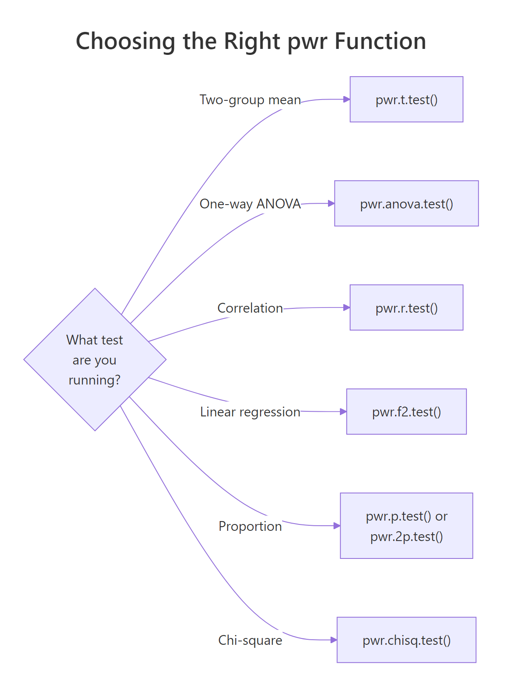
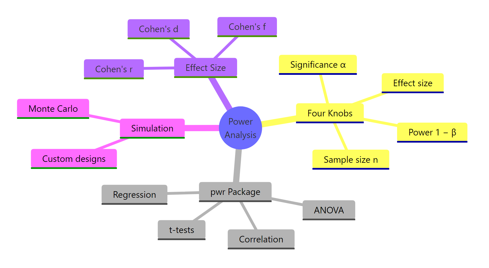

Power Analysis in R: Calculate the Sample Size You Need Before You Collect Any Data
Power analysis tells you how large a sample you need to reliably detect an effect of a given size, before you collect any data. The pwr package in R solves for any one of four quantities (sample size, effect size, significance level, power) given the other three, across t-tests, ANOVA, correlation, and regression.
Why run a power analysis before collecting data?
Running a study without a power analysis is like setting a trap without asking what animal you want to catch. You might collect data, run a test, and walk away with "no significant effect" when the real issue was that the sample was too small to detect the effect you cared about. A power analysis answers the sizing question before you start.
Here is what that calculation looks like for a simple two-sample t-test, using the workhorse pwr package. We want 80% power to detect a moderate effect (Cohen's d = 0.5) at the conventional 5% significance level.
pwr returns n ≈ 63.8 per group, which you round up to 64. So this study needs roughly 128 subjects in total. If you can only afford 60 per group, you cannot reliably detect d = 0.5 at 80% power, and you know that before writing a consent form. That is the payoff: a vague worry about sample size becomes a specific integer that drives budget, timeline, and ethics decisions.
Try it: Recompute the per-group sample size for a smaller effect, Cohen's d = 0.3, keeping power = 0.80 and α = 0.05.
Click to reveal solution
Explanation: Halving the effect size roughly triples the required n. Sample size grows with 1/d², not linearly. That is why a "small" effect is expensive to detect.
What are the four knobs: n, d, α, and power?
Every power calculation is a relationship between four quantities:
- n, sample size (per group for two-sample tests).
- d (or r, f, f²), effect size. The magnitude of the thing you are trying to detect, on a standardised scale.
- α, significance level. The Type I error rate you are willing to accept (usually 0.05).
- power, probability of rejecting H₀ when the alternative is true (usually 0.80). Equivalently, 1 − β, where β is the Type II error rate.

Figure 1: The four quantities in power analysis. Fix any three and the fourth is determined.
Any pwr function takes three of these as inputs and leaves one as NULL. The one you leave as NULL is the one pwr computes.
Example: suppose you already have n = 40 per group and you want to know how much power that buys you at d = 0.5.
At n = 40 per group, power is only about 0.60, which means a 40% chance of missing a real d = 0.5 effect. Almost a coin flip. That is why 40 per group is not enough for this effect.
Flip it around: given n = 50 and target power 0.80, what is the smallest effect you could reliably detect?
You would need an effect of at least d ≈ 0.57 to have an 80% chance of detecting it. Anything smaller is invisible to a study of this size. This is called a "minimum detectable effect" and it is a crucial sanity check: if d = 0.57 is larger than any realistic effect in your field, the study is doomed before it starts.
Try it: Call pwr.t.test() leaving both n and power as NULL. Predict what pwr will do before running.
Click to reveal solution
Explanation: pwr refuses to guess which quantity to solve for. Specify three, leave exactly one as NULL, and pwr fills it in.
How do you choose an effect size you can defend?
Effect size is the hardest input to pick, and it drives everything else. For a two-sample comparison, pwr uses Cohen's d: the difference in means divided by the pooled standard deviation.
Before you touch the formula, the intuition: d = 1 means the two group means are a full standard deviation apart, which is a very visible difference. d = 0.2 means the group means barely separate relative to the noise in the data, which is hard to see with the naked eye.
$$d = \frac{\bar{x}_1 - \bar{x}_2}{s_{pooled}}, \quad s_{pooled} = \sqrt{\frac{(n_1-1)s_1^2 + (n_2-1)s_2^2}{n_1 + n_2 - 2}}$$
Where:
- $\bar{x}_1, \bar{x}_2$ = sample means for the two groups
- $s_1, s_2$ = sample standard deviations for the two groups
- $n_1, n_2$ = sample sizes for the two groups
- $s_{pooled}$ = a weighted-average SD that pools information from both groups
Let's compute Cohen's d from two pilot samples. Imagine you ran a small pilot where 20 people got treatment A and 20 got treatment B, and you measured their response on some continuous scale.
The pilot yields d ≈ 0.66, a moderate-to-large effect. Plug that into pwr.t.test() and you would find roughly n = 38 per group for 80% power. But notice what just happened: you used the pilot's own effect size to plan the main study. That is risky. Pilot samples are small, so their d estimates are noisy. A pilot that overshoots by chance gives you an undersized main study.
Cohen's informal benchmarks are d = 0.2 (small), 0.5 (medium), 0.8 (large), but these numbers came from general behavioural science. In a clinical trial where the outcome is mortality, d = 0.2 may be a huge, life-saving effect; in a marketing A/B test measuring click-through, d = 0.8 may be unrealistic. Use the benchmarks only as a last resort.
Try it: Compute Cohen's d for two small groups you simulate: group A is rnorm(15, 50, 10) and group B is rnorm(15, 55, 10). Use the same pooled formula.
Click to reveal solution
Explanation: A 5-point difference relative to an SD of about 10 gives d ≈ 0.5, confirming the intuition that the population difference of 5 SD units is roughly half an SD on the standardised scale.
Which pwr function matches your test?
pwr is a menu of functions, one per test family. Pick the function that matches your planned analysis, then solve for the knob you care about.

Figure 2: Mapping from test type to the matching pwr function.
Here is the quick reference table.
| Planned test | pwr function | Effect-size argument | Cohen convention (small / medium / large) |
|---|---|---|---|
| Two-group mean comparison | pwr.t.test() |
d |
0.2 / 0.5 / 0.8 |
| One-way ANOVA (k groups) | pwr.anova.test() |
f |
0.10 / 0.25 / 0.40 |
| Correlation | pwr.r.test() |
r |
0.10 / 0.30 / 0.50 |
| Linear regression / GLM | pwr.f2.test() |
f2 |
0.02 / 0.15 / 0.35 |
| One proportion | pwr.p.test() |
h |
0.2 / 0.5 / 0.8 |
| Two proportions | pwr.2p.test() |
h |
0.2 / 0.5 / 0.8 |
| Chi-square | pwr.chisq.test() |
w |
0.1 / 0.3 / 0.5 |
Let's work through the three most common non-t cases. First, a one-way ANOVA with four groups and a medium effect (Cohen's f = 0.25).
You need about 45 subjects per group, or 180 total, to detect a medium between-group effect at 80% power.
Now a correlation study targeting r = 0.3, which is a typical "moderate" correlation in behavioural data.
Eighty-five subjects will give 80% power to detect r = 0.3. For r = 0.1 you would need roughly 800. Correlation studies punish small effects even harder than t-tests.
Finally, a linear regression: you are fitting a model with 3 predictors and want to detect a medium effect (Cohen's f² = 0.15) on R².
The denominator df is v ≈ 73, so total sample size is u + v + 1 ≈ 77. pwr.f2.test() reports v, not n, which trips up almost everyone the first time. Always add u + 1 to v to get your actual sample size.
alternative = "greater" can shave 20% off the sample size. It is also a form of data-dependent reasoning if you decide the direction after looking at the pilot. Pre-register or use two-sided.Try it: Use pwr.r.test() to find the sample size needed to detect a smaller correlation of r = 0.25 at 80% power, α = 0.05.
Click to reveal solution
Explanation: A drop from r = 0.30 to r = 0.25 lifts the required n from 85 to 123, a ~45% increase. The cost of detecting smaller effects grows fast.
How does power change with sample size and effect size?
A single pwr call answers one question. A power curve answers a hundred. Sweep n across a grid and you get a picture of how detection probability rises as sample size grows, for whatever effect size you fix. This is how you defend a sample size to a skeptical reviewer: "here is the curve, here is where we are on it, here is what we would gain by adding another 50 subjects".
The dashed red line at 0.80 is the conventional power target; the dotted blue line at n = 64 is the per-group sample size we computed earlier. The curve is steep in the middle (each new subject buys real power) and flat on the right (every extra subject buys less and less). That flattening is the diminishing-returns zone.
Now overlay two effect sizes to see how much the curve shifts when d changes.
The d = 0.3 curve is pushed far to the right: at n = 120 per group you still have not hit 80% power. That mismatch tells a researcher one thing clearly, "we cannot afford to plan around a d = 0.3 effect with this recruitment budget; we need either more subjects or a stronger intervention."
Try it: Extend the single-d curve to n up to 200 and add a horizontal line at 0.95 power. At what n does the curve cross 0.95?
Click to reveal solution
Explanation: Reaching 95% power (instead of 80%) for d = 0.5 requires about 105 per group, up from 64. The extra 40 subjects per group buys you 15 percentage points of power.
What do you do when no pwr function fits: simulation-based power?
pwr covers the classic tests, but real studies use mixed models, logistic regression with interactions, non-parametric tests on skewed outcomes, and other designs for which no closed-form formula exists. For those, the answer is simulation.
The recipe is always the same:
- Specify a data-generating process consistent with your alternative hypothesis (fixed effect sizes, variances, group assignments).
- Simulate one dataset from it, run your planned test, record the p-value.
- Repeat M times (M = 1000 or more).
- Power = proportion of the M runs with p < α.
Let's say you plan to compare two groups, but your outcome is badly right-skewed (income, reaction time, cell counts). You will analyse it with a Wilcoxon rank-sum test, not a t-test, because the data are non-normal. pwr cannot give you a Wilcoxon sample size directly. Simulation can.
At n = 30 per group, the Wilcoxon test has ~71% power to detect a meanlog shift of 0.4 between two log-normal distributions. Below the 80% target, so n = 30 is not enough for this design. You would rerun with larger n until the estimated power crosses 0.80.
Try it: Rerun the simulation above with n_per_group = 60. Does power cross 0.80?
Click to reveal solution
Explanation: Doubling n from 30 to 60 per group lifts simulated power from ~71% to ~94% for this skewed design. Simulation gives you direct answers for any test, at the cost of computation time.
Practice Exercises
Exercise 1: Planning a clinical trial from pilot data
A pilot study on a new blood-pressure drug reports: mean difference 2.1 mmHg, pooled SD 5.0 mmHg. Compute Cohen's d, then find the per-group sample size needed for 80% power at α = 0.05 using pwr.t.test(). Save the final sample size to my_n_per_group.
Click to reveal solution
Explanation: d = 2.1 / 5.0 = 0.42, a small-to-medium effect. At that effect size, 80% power requires 90 patients per arm, or 180 total, plus whatever buffer you want for dropout. A reviewer would now check whether the pilot itself was large enough to trust d = 0.42.
Exercise 2: Write your own power curve function
Write a function my_power_curve(n_grid, d, alpha = 0.05) that returns a data frame with columns n and power for a two-sample t-test. Then plot it with ggplot2, with a horizontal line at 0.80.
Click to reveal solution
Explanation: Wrapping pwr.t.test() inside a function turns every power analysis into a one-liner you can reuse across studies. Swap d, alpha, or the test family and the same scaffolding answers a new question.
Complete Example: Planning a blood-pressure trial end-to-end
A cardiologist wants to know if a new drug lowers systolic blood pressure by at least 3 mmHg on average compared to placebo. Published data suggest the pooled SD within each arm is about 10 mmHg. Let's plan the trial.
The trial needs 176 patients per arm, or 352 total, to have 80% power to detect a 3 mmHg drop. The sensitivity table shows the power we would gain by recruiting 44 more per arm (up to 0.88) and by pushing to 280 (0.95). Now the statistician can hand the cardiologist a one-sentence recommendation: "Plan for 176 per arm for 80% power, aim for 220 to buffer against dropout and hit ~88%." That sentence would not exist without a power analysis.
Summary

Figure 3: Power analysis in R at a glance.
| Quantity | Typical value | Role |
|---|---|---|
| Effect size | d = 0.5, f = 0.25, r = 0.3, f² = 0.15 | What you are trying to detect, on a standardised scale |
| Significance α | 0.05 | Type I error rate you accept |
| Power (1 − β) | 0.80 | Probability of catching the effect when it is real |
| Sample size n | Solved for | What pwr returns |
Key takeaways:
- Power analysis is for planning, not diagnosis. Run it before you collect data. Post-hoc power is not a fix for null results.
- The four knobs are linked. Fix any three and the fourth is determined. Every
pwr.*function enforces this. - Effect size is the hardest input. Defend it with literature first, pilot data second, Cohen's conventions last.
- Simulation is the escape hatch when no
pwrfunction fits your design (mixed models, rank tests, interactions). - Power curves beat single numbers when communicating to reviewers or stakeholders.
References
- Cohen, J. (1988). Statistical Power Analysis for the Behavioral Sciences (2nd ed.). Routledge. Link
- Champely, S. pwr: Basic Functions for Power Analysis. CRAN. Link
- Kelley, K., Maxwell, S. E., & Rausch, J. R. (2003). Obtaining Power or Obtaining Precision: Delineating Methods of Sample-Size Planning. Evaluation & the Health Professions, 26(3), 258–287. Link
- Gelman, A. & Carlin, J. (2014). Beyond Power Calculations: Assessing Type S (Sign) and Type M (Magnitude) Errors. Perspectives on Psychological Science, 9(6), 641–651. Link
- Hoenig, J. M. & Heisey, D. M. (2001). The Abuse of Power: The Pervasive Fallacy of Power Calculations for Data Analysis. The American Statistician, 55(1), 19–24. Link
- Green, P. & MacLeod, C. J. (2016). SIMR: an R package for power analysis of generalized linear mixed models by simulation. Methods in Ecology and Evolution, 7(4), 493–498. Link
- R Core Team. power.t.test, power.anova.test in base R. Link
Continue Learning
- Hypothesis Testing in R, the framework power analysis protects against. Understand what it means to reject H₀ before you size a study around it.
- Type I and Type II Errors in R, the α/β trade-off visualised. Power analysis is where that trade-off becomes a number.
- Confidence Intervals in R, the other side of sample-size planning: precision, not detection.